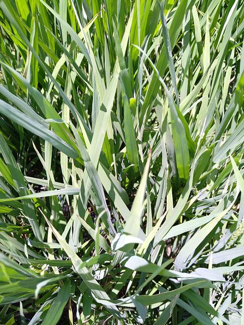
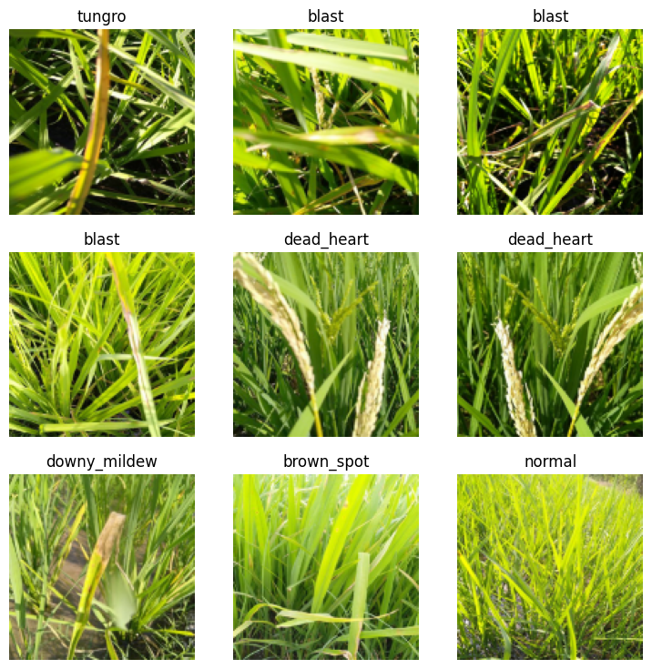
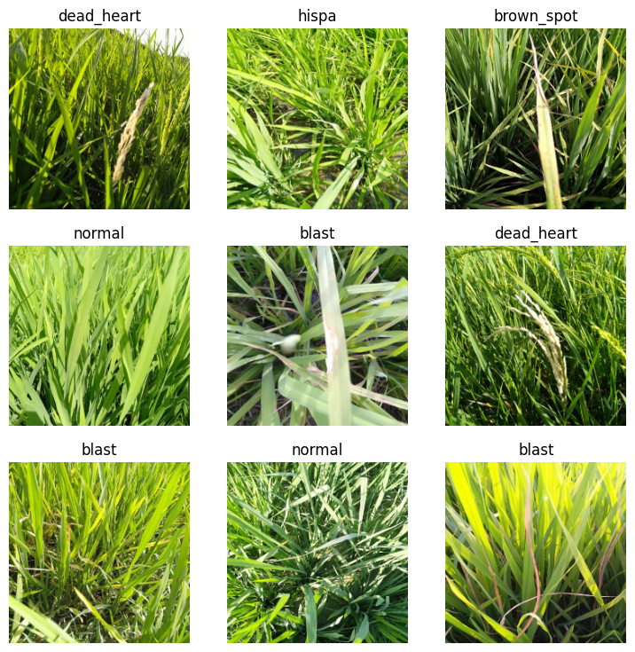
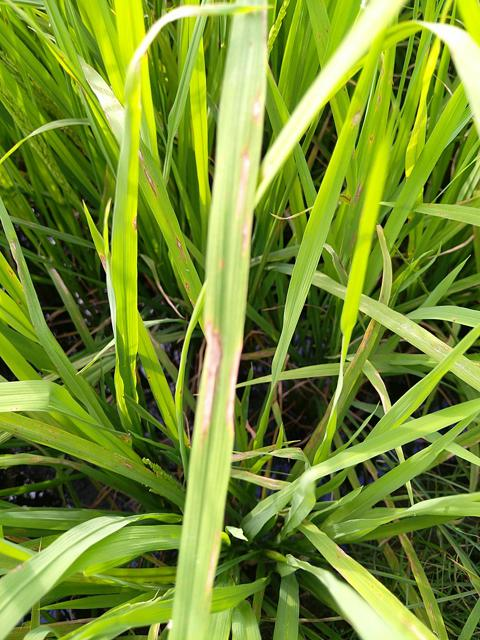
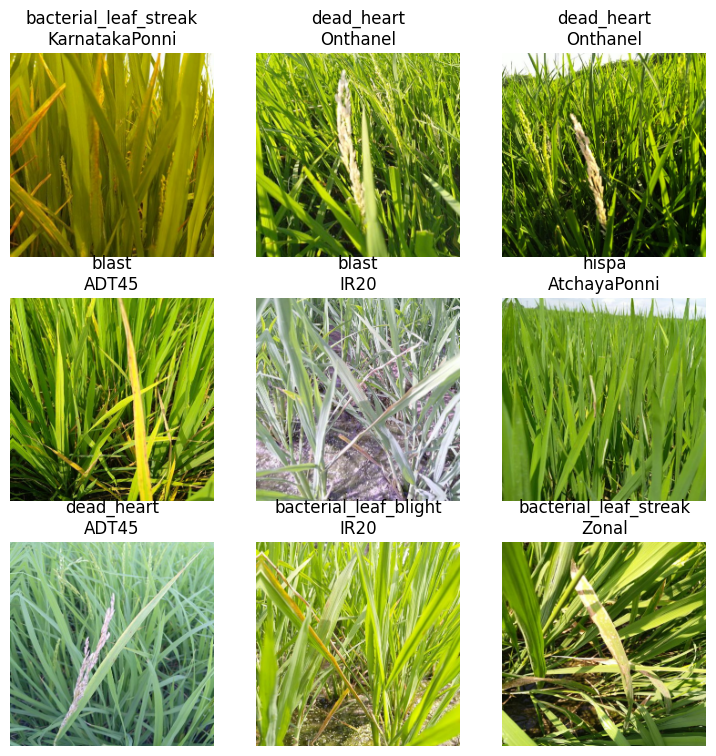

!pip install -qq timm==0.6.13
import timm
timm.__version__'0.6.13'In the fastai course Part 1 Lesson 6 video Jeremy Howard walked through the notebooks First Steps: Road to the Top, Part 1 and Small models: Road to the Top, Part 2 where he builds increasingly accurate solutions to the Paddy Doctor: Paddy Disease Classification Kaggle Competition. In the video, Jeremy referenced a series of walkthrough videos that he made while working through the four-notebook series for this competition. I’m excited to watch these walkthroughs to better understand how to approach a Kaggle competition from the perspective of a former #1 Kaggle grandmaster.
In this blog post series, I’ll walk through the code Jeremy shared in each of the 6 Live Coding videos focused on this competition, submitting predictions to Kaggle along the way. My last two blog posts in this series reference Jeremy’s Scaling Up: Road to the Top, Part 3 notebook to improve my large model ensemble predictions. Here are the links to each of the blog posts in this series:
!pip install -qq timm==0.6.13
import timm
timm.__version__'0.6.13'# install fastkaggle if not available
try: import fastkaggle
except ModuleNotFoundError:
!pip install -Uq fastkaggle
from fastkaggle import *
from fastai.vision.all import *
comp = 'paddy-disease-classification'
path = setup_comp(comp, install='fastai')/opt/conda/lib/python3.10/site-packages/scipy/__init__.py:146: UserWarning: A NumPy version >=1.16.5 and <1.23.0 is required for this version of SciPy (detected version 1.24.3
warnings.warn(f"A NumPy version >={np_minversion} and <{np_maxversion}"path.ls()(#4) [Path('../input/paddy-disease-classification/sample_submission.csv'),Path('../input/paddy-disease-classification/train_images'),Path('../input/paddy-disease-classification/train.csv'),Path('../input/paddy-disease-classification/test_images')]trn_path = path/'train_images'Jeremy re-did his approach to the multi-head (multi-task) classification that we started in the last live coding session. Spoiler alert: it didn’t turn out to help our final score, the score was about the same. As soon as Jeremy turned off Zoom and went for a walk, he realized how he should approach this problem. We can make this much much simpler.
We are going to try to predict two things: the disease and the variety for each image. The first thing is to create a pair of DataLoaders:
df = pd.read_csv(path/'train.csv')
df.head()| image_id | label | variety | age | |
|---|---|---|---|---|
| 0 | 100330.jpg | bacterial_leaf_blight | ADT45 | 45 |
| 1 | 100365.jpg | bacterial_leaf_blight | ADT45 | 45 |
| 2 | 100382.jpg | bacterial_leaf_blight | ADT45 | 45 |
| 3 | 100632.jpg | bacterial_leaf_blight | ADT45 | 45 |
| 4 | 101918.jpg | bacterial_leaf_blight | ADT45 | 45 |
ImageDataLoaders to DataBlockRecreate what we had starting from the small models where Jeremy used ImageDataLoaders which is the highest-level, least-flexible function where you can do all of the data processing in a single line of code but only if we want to do something really standard. Trying to predict two things is not standard enough for it.
We need to go one layer down. All of the work in ImageDataLoaders is being done by DataBlock, which is still high-level API but very flexible.
Here’s how to setup a DataBlock for disease classification:
dblock = DataBlock(
blocks=(ImageBlock, CategoryBlock),
get_items = get_image_files,
get_y = parent_label,
splitter=RandomSplitter(0.2, seed=42),
item_tfms=Resize(480, method='squish'),
batch_tfms=aug_transforms(size=224, min_scale=0.75))
dls = dblock.dataloaders(trn_path)
dls.show_batch()
Here’s the source code of ImageBlock:
def ImageBlock(cls:PILBase=PILImage):
"A `TransformBlock` for images of `cls`"
return TransformBlock(type_tfms=cls.create, batch_tfms=IntToFloatTensor)Which calls PILImage.create, which returns an Image from a filename:
PILImage.create?Signature: PILImage.create( fn: 'Path | str | Tensor | ndarray | bytes | Image.Image', **kwargs, ) Docstring: Return an Image from `fn` File: /opt/conda/lib/python3.10/site-packages/fastai/vision/core.py Type: method
get_image_files will return a list of Paths:
get_image_files(trn_path)(#10407) [Path('../input/paddy-disease-classification/train_images/tungro/109629.jpg'),Path('../input/paddy-disease-classification/train_images/tungro/104765.jpg'),Path('../input/paddy-disease-classification/train_images/tungro/109706.jpg'),Path('../input/paddy-disease-classification/train_images/tungro/100098.jpg'),Path('../input/paddy-disease-classification/train_images/tungro/102734.jpg'),Path('../input/paddy-disease-classification/train_images/tungro/106433.jpg'),Path('../input/paddy-disease-classification/train_images/tungro/108930.jpg'),Path('../input/paddy-disease-classification/train_images/tungro/102019.jpg'),Path('../input/paddy-disease-classification/train_images/tungro/102416.jpg'),Path('../input/paddy-disease-classification/train_images/tungro/101046.jpg')...]These Paths are passed into PILImage.create to create an image:
PILImage.create(get_image_files(trn_path)[0])
We have now just replicated what is happening in the code with ImageBlock (which also converts the PILImage object into a tensor with IntToFloatTensor).
Jeremy then made sure that the DataBlock approach to create the DataLoaders resulted in a successful training run, making sure to use a very small model and small image size to make it run quickly (as all we’re testing is that it trains it correctly).
dblock = DataBlock(
blocks=(ImageBlock, CategoryBlock),
get_items = get_image_files,
get_y = parent_label,
splitter=RandomSplitter(0.2, seed=42),
item_tfms=Resize(480, method='squish'),
batch_tfms=aug_transforms(size=128, min_scale=0.75))
dls = dblock.dataloaders(trn_path)
dls.show_batch()
learn = vision_learner(dls, resnet18, metrics=error_rate).to_fp16()
learn.fit_one_cycle(1, 0.01)Downloading: "https://download.pytorch.org/models/resnet18-f37072fd.pth" to /root/.cache/torch/hub/checkpoints/resnet18-f37072fd.pth
100%|██████████| 44.7M/44.7M [00:00<00:00, 52.0MB/s]| epoch | train_loss | valid_loss | error_rate | time |
|---|---|---|---|---|
| 0 | 1.510234 | 0.961617 | 0.334455 | 01:08 |
You want something that works this quickly so that you can test that end-to-end things are working.
Note: fastai will shuffle the training dataset before each epoch to ensure the model is trained on a different order of images each epoch.
Then, Jeremy ran the training run on the same architecture and number of epochs as before to make sure he got the same error rate:
dblock = DataBlock(
blocks=(ImageBlock, CategoryBlock),
get_items = get_image_files,
get_y = parent_label,
splitter=RandomSplitter(0.2, seed=42),
item_tfms=Resize(480, method='squish'),
batch_tfms=aug_transforms(size=224, min_scale=0.75))
dls = dblock.dataloaders(trn_path)
dls.show_batch()
learn = vision_learner(dls, 'convnext_small_in22k', metrics=error_rate).to_fp16()
learn.fine_tune(12, 0.01)| epoch | train_loss | valid_loss | error_rate | time |
|---|---|---|---|---|
| 0 | 1.064408 | 0.718689 | 0.213359 | 01:10 |
| epoch | train_loss | valid_loss | error_rate | time |
|---|---|---|---|---|
| 0 | 0.498714 | 0.272892 | 0.093224 | 01:27 |
| 1 | 0.373369 | 0.210002 | 0.066314 | 01:28 |
| 2 | 0.325415 | 0.251021 | 0.081211 | 01:28 |
| 3 | 0.272691 | 0.230358 | 0.067756 | 01:28 |
| 4 | 0.238369 | 0.232206 | 0.068236 | 01:28 |
| 5 | 0.169128 | 0.104292 | 0.031235 | 01:28 |
| 6 | 0.132344 | 0.132922 | 0.036521 | 01:28 |
| 7 | 0.081303 | 0.105022 | 0.027871 | 01:28 |
| 8 | 0.065025 | 0.095855 | 0.024988 | 01:28 |
| 9 | 0.050113 | 0.093793 | 0.023066 | 01:28 |
| 10 | 0.043371 | 0.094051 | 0.023066 | 01:28 |
| 11 | 0.034400 | 0.093678 | 0.022585 | 01:28 |
The final error rate (~0.02) is similar to the original training done using the DataLoaders made from ImageDataLoaders.
DataBlock Spit Out Three ThingsOne image and two categories (disease and variety). To get it to spit out two categories, you add another CategoryBlock.
Given an image id we need a way of getting its variety. Originally Jeremy handled it with “an ugly way” of doing it. Instead create a dict which maps from image_id to variety, and our function will be to just look that up.
img2variety = { r.image_id: r.variety for _, r in df.iterrows() }dict(list(img2variety.items())[0:10]){'100330.jpg': 'ADT45',
'100365.jpg': 'ADT45',
'100382.jpg': 'ADT45',
'100632.jpg': 'ADT45',
'101918.jpg': 'ADT45',
'102353.jpg': 'ADT45',
'102848.jpg': 'ADT45',
'103051.jpg': 'ADT45',
'103702.jpg': 'ADT45',
'103920.jpg': 'ADT45'}When you access a dict item, like img2variety['100330.jpg'], behind the scenes it’s making a function call img2variety.__getitem__('100330.jpg')
img2variety.__getitem__('100330.jpg')'ADT45'However, in the DataBlock, get_image_files returns a bunch of Path objects which get passed to the get_y function to get the dependent variables. Since img2variety keys are filename strings, we need to wrap it in a function to handle Path object inputs:
def get_variety(p): return img2variety[p.name]We need to tell the DataBlock how many of the blocks are independent variables with n_inp.
dblock = DataBlock(
blocks=(ImageBlock, CategoryBlock, CategoryBlock),
n_inp=1,
get_items=get_image_files,
get_y = [parent_label, get_variety],
splitter=RandomSplitter(0.2, seed=42),
item_tfms=Resize(480, method='squish'),
batch_tfms=aug_transforms(size=224, min_scale=0.75))Before creating DataLoaders, test with Datasets as they are easier to debug (can access one image at a time instead of a batch).
dss = dblock.datasets(trn_path)img, y1, y2 = dss.train[0]img
y1TensorCategory(3)y2TensorCategory(0)Let’s recreate the pipeline of going from filename to these three outputs:
fn = get_image_files(trn_path)[0]fn, fn.name(Path('../input/paddy-disease-classification/train_images/tungro/109629.jpg'),
'109629.jpg')Recreating what the ImageBlock does:
PILImage.create(fn)
Recreating what get_y does:
[parent_label(fn), get_variety(fn)]['tungro', 'ADT45']Would it make sense to have multiple get_items? No, get_items returns a single thing, but it could be whatever you like (tuple, list, dict, etc.). Then get_y and get_x are responsible for pulling out the bit that you need to pass to your blocks. We don’t need get_x in this case because ImageBlocks just take Paths as inputs directly.
Here is the “hacky” method Jeremy tried originally:
dblock = DataBlock(
blocks=(ImageBlock, CategoryBlock, CategoryBlock),
n_inp=1,
get_x = lambda x: trn_path/x[1]/x[0],
get_y = [ColReader(1), ColReader(2)],
splitter=RandomSplitter(0.2, seed=42),
item_tfms=Resize(480, method='squish'),
batch_tfms=aug_transforms(size=224, min_scale=0.75))TransformBlock and ImageBlock workNow we’ll go into the weeds.
TransformBlock??Init signature: TransformBlock( type_tfms: 'list' = None, item_tfms: 'list' = None, batch_tfms: 'list' = None, dl_type: 'TfmdDL' = None, dls_kwargs: 'dict' = None, ) Source: class TransformBlock(): "A basic wrapper that links defaults transforms for the data block API" def __init__(self, type_tfms:list=None, # One or more `Transform`s item_tfms:list=None, # `ItemTransform`s, applied on an item batch_tfms:list=None, # `Transform`s or `RandTransform`s, applied by batch dl_type:TfmdDL=None, # Task specific `TfmdDL`, defaults to `TfmdDL` dls_kwargs:dict=None, # Additional arguments to be passed to `DataLoaders` ): self.type_tfms = L(type_tfms) self.item_tfms = ToTensor + L(item_tfms) self.batch_tfms = L(batch_tfms) self.dl_type,self.dls_kwargs = dl_type,({} if dls_kwargs is None else dls_kwargs) File: /opt/conda/lib/python3.10/site-packages/fastai/data/block.py Type: type Subclasses:
A TransformBlock stores a bunch of things you pass in, like type transforms, item transforms, batch transforms, it always adds ToTensor since PyTorch works with tensors. Remember that an ImageBlock is a TransformBlock where the type transform is specified as PILImage.create and the batch transform is IntToTensor.
If you pass TransformBlock to the DataBlock.blocks, it wont do anything.
dblock = DataBlock(
blocks=(TransformBlock),
get_items=get_image_files,
splitter=RandomSplitter(0.2, seed=42),
)dss = dblock.datasets(trn_path)dss.train[0](Path('../input/paddy-disease-classification/train_images/blast/105663.jpg'),)All this does is take the output of get_image_files[0] and turns it into a tuple containing one thing, which is the thing itself. If we have two transform blocks, it returns a tuple with two things in it:
dblock = DataBlock(
blocks=(TransformBlock, TransformBlock),
get_items=get_image_files,
splitter=RandomSplitter(0.2, seed=42),
)
dss = dblock.datasets(trn_path)
dss.train[0](Path('../input/paddy-disease-classification/train_images/blast/105663.jpg'),
Path('../input/paddy-disease-classification/train_images/blast/105663.jpg'))It’s returning tuples because that’s what we want: we want batches of tuples that contain inputs and outputs (potentially multiple inputs and outputs).
We can do stuff to the first thing in the tuple with get_x:
dblock = DataBlock(
blocks=(TransformBlock, TransformBlock),
get_x=lambda o: o.name,
get_items=get_image_files,
splitter=RandomSplitter(0.2, seed=42),
)
dss = dblock.datasets(trn_path)
dss.train[0]('105663.jpg',
Path('../input/paddy-disease-classification/train_images/blast/105663.jpg'))o.name for each get_image_files output is the filename. We can do stuff to the second thing in the tuple with get_y:
dblock = DataBlock(
blocks=(TransformBlock, TransformBlock),
get_x=lambda o: o.name,
get_y=lambda o: o.parent,
get_items=get_image_files,
splitter=RandomSplitter(0.2, seed=42),
)
dss = dblock.datasets(trn_path)
dss.train[0]('105663.jpg',
Path('../input/paddy-disease-classification/train_images/blast'))TransformBlocks don’t do anything but the number of them you have is the number of pipelines it’s going to create. Suppose we had three TransformBlocks assigned to DataBlock.blocks—this will require a total of three functions between get_x and get_y:
dblock = DataBlock(
blocks=(TransformBlock, TransformBlock, TransformBlock),
get_x=[lambda o: o.name, lambda o: o.name],
get_y=lambda o: o.parent,
get_items=get_image_files,
splitter=RandomSplitter(0.2, seed=42),
)
dss = dblock.datasets(trn_path)
dss.train[0]('105663.jpg',
'105663.jpg',
Path('../input/paddy-disease-classification/train_images/blast'))By default, the last one in the tuple is the y and the first two are the x, unless we specify n_inp as 1, provide 1 function for get_x and then two functions for get_y:
dblock = DataBlock(
blocks=(TransformBlock, TransformBlock, TransformBlock),
n_inp=1,
get_x=lambda o: o.name,
get_y=[lambda o: o.parent, lambda o: o.parent],
get_items=get_image_files,
splitter=RandomSplitter(0.2, seed=42),
)
dss = dblock.datasets(trn_path)
dss.train[0]('105663.jpg',
Path('../input/paddy-disease-classification/train_images/blast'),
Path('../input/paddy-disease-classification/train_images/blast'))You can also pass the functions to TransformBlock.type_tfms instead:
dblock = DataBlock(
blocks=(TransformBlock(type_tfms=[lambda o: o.name]), TransformBlock, TransformBlock),
n_inp=1,
get_y=[lambda o: o.parent, lambda o: o.parent],
get_items=get_image_files,
splitter=RandomSplitter(0.2, seed=42),
)
dss = dblock.datasets(trn_path)
dss.train[0]('105663.jpg',
Path('../input/paddy-disease-classification/train_images/blast'),
Path('../input/paddy-disease-classification/train_images/blast'))Let’s create an ImageBlock manually:
dblock = DataBlock(
blocks=(TransformBlock(type_tfms=PILImage.create, batch_tfms=IntToFloatTensor), TransformBlock, TransformBlock),
n_inp=1,
get_y=[lambda o: o.parent, lambda o: o.parent],
get_items=get_image_files,
splitter=RandomSplitter(0.2, seed=42),
)
dss = dblock.datasets(trn_path)
dss.train[0](PILImage mode=RGB size=480x640,
Path('../input/paddy-disease-classification/train_images/blast'),
Path('../input/paddy-disease-classification/train_images/blast'))TransformBlocks don’t do anything at all, they only store things. There’s no __call__, there’s no __forward__, etc. The DataBlock is going to go through and say okay for each thing (from get_image_files) call each of the type_tfms and ToTensor and then each of the item_tfms and for batches call each of the batch_tfms of each TransformBlock.
get_x and get_y get called first and then type_tfms of TransformBlocks get called on their outputs.
When you call DataBlock.datasets it creates a Datasets object and passes in all of the type, item and batch transforms to it. The item transform gets done by the DataLoaders and not the Datasets.
The only reason there’s a lot of code defining the DataBlock is to make sure that if two different things have the same type transforms, we merge them together in a sensible way. Type transforms are happening before DataLoaders time. DataLoaders are the things that are going to take tensors or at least things that can be converted into tensors. Type transforms are going to create your Datasets for you and spit out things which need to be convertible into tensors. And then DataLoaders has item transforms which are things like Resize and batch transforms which are things like data augmentation.
Item transforms are not going to run on GPU because the items aren’t a batch yet. You need things in a batch before the GPU can be optimized effectively.
There is a callback which sticks things on the GPU. It just depends on whether things done are before or after that callback.
The fastai implementation of DataLoaders is a superset of PyTorch’s implementation.
PyTorch’s Dataset is an abstract class and doesn’t do anything at all. A Dataset is something you can index into and it returns a single tuple with independent and dependent variables. That’s how it’s defined by PyTorch and that’s what fastai does as well.
You can’t index into a DataLoader, you can only iterate through it, you can grab the next one and it gives you a mini-batch which is a tensor.
You need something that converts the output of get_image_files into a Dataset and that’s what type_tfms do.
This is not the only way you could do this, but it’s our way that’s really nice because we now have this thing that you can see the 14th image and its label. If we didn’t have type transforms it would be just one more step in item transforms—your Datasets would return two things (outputs of get_x and get_y) and then the DataLoader would have to do more work which would be a perfectly okay way to do things.
The rule is that you need something that can be turned into a tensor. That’s the way fastai does it. You need to make sure that your type transform returns something that is a tensor or can be turned into a tensor (which a PILImage can be).
DataBlock for multi-classification notebookdblock = DataBlock(
blocks=(ImageBlock, TransformBlock, TransformBlock),
n_inp=1,
get_y=[lambda o: o.parent.name, get_variety],
get_items=get_image_files,
splitter=RandomSplitter(0.2, seed=42),
)
dss = dblock.datasets(trn_path)
dss.train[0](PILImage mode=RGB size=480x640, 'blast', 'ADT45')This breaks our rule because the last two things can’t be turned into a tensor (they are strings). What do we do with that? W replace strings with integers that are a lookup into the vocabulary. If we change the last two TransformBlocks into CategoryBlocks, that is exactly what CategoryBlock will do.
dblock = DataBlock(
blocks=(ImageBlock, CategoryBlock, CategoryBlock),
n_inp=1,
get_y=[lambda o: o.parent.name, get_variety],
get_items=get_image_files,
splitter=RandomSplitter(0.2, seed=42),
)
dss = dblock.datasets(trn_path)
dss.train[0](PILImage mode=RGB size=480x640, TensorCategory(3), TensorCategory(0))CategoryBlock has a type transform called Categorize.
CategoryBlock??Signature: CategoryBlock( vocab: 'MutableSequence | pd.Series' = None, sort: 'bool' = True, add_na: 'bool' = False, ) Source: def CategoryBlock( vocab:MutableSequence|pd.Series=None, # List of unique class names sort:bool=True, # Sort the classes alphabetically add_na:bool=False, # Add `#na#` to `vocab` ): "`TransformBlock` for single-label categorical targets" return TransformBlock(type_tfms=Categorize(vocab=vocab, sort=sort, add_na=add_na)) File: /opt/conda/lib/python3.10/site-packages/fastai/data/block.py Type: function
dss.vocab(#2) [['bacterial_leaf_blight', 'bacterial_leaf_streak', 'bacterial_panicle_blight', 'blast', 'brown_spot', 'dead_heart', 'downy_mildew', 'hispa', 'normal', 'tungro'],['ADT45', 'AndraPonni', 'AtchayaPonni', 'IR20', 'KarnatakaPonni', 'Onthanel', 'Ponni', 'RR', 'Surya', 'Zonal']]To summarize: get_items gets us the rows or the examples, then we use get_y or get_x to transform it somehow so that we can pass it into the type_tfms of those blocks. The blocks are very general things, so Jeremy didn’t want us to have to write our own every time—ImageBlock will work if you pass it an image path, CategoryBlock will work if you pass it a string. So get_x and get_y then are responsible for ensuring that you pass ImageBlock a Path and CategoryBlock a string. Note that get_image_files is already returning a path so we don’t need a get_x, but it’s not returning strings so we do need a get_y.
Let’s return to the full DataBlock for multi-classification. Some other time Jeremy will talk about how item_tfms are not applies to the categories but only to the images. The secret is using fastcore’s type dispatch functionality. If we had an image for the y, the item_tfms would apply (see the siamese tutorial on the fastai docs, because that has two images). If you think about it, anytime we do segmentation, that’s what’s happening—data augmentation is happening to x and y. This is really unusual, Jeremy doesn’t know if any other libraries that have this kind of totally transparent ability to do bounding boxes, segmentation, point clouds, whatever as dependent variables and have it all happen in unison very automatically (or at least there didn’t use to be—maybe there is now).
dblock = DataBlock(
blocks=(ImageBlock, CategoryBlock, CategoryBlock),
n_inp=1,
get_items=get_image_files,
get_y = [parent_label, get_variety],
splitter=RandomSplitter(0.2, seed=42),
item_tfms=Resize(480, method='squish'),
batch_tfms=aug_transforms(size=224, min_scale=0.75))dls = dblock.dataloaders(trn_path)fastai does a lot of things automatically because of type dispatch.
dls.show_batch()
All the stuff we did last time about messing around with multiple different heads and all that is actually totally unecessary. All we need to do when we create our vision_learner is tell it we don’t want 10 outputs but we want 20 outputs.
Then you need to tell it what loss function to use:
orig_lf = CrossEntropyLossFlat()
def disease_err(inp, disease, variety): return error_rate(inp[:,:10], disease)
def variety_err(inp, disease, variety): return error_rate(inp[:,10:], variety)
def disease_loss(inp, disease, variety): return orig_lf(inp[:,:10], disease)
def variety_loss(inp, disease, variety): return orig_lf(inp[:,10:], variety)
def loss(pred, disease, variety): return orig_lf(pred[:,:10], disease)+orig_lf(pred[:,10:],variety)err_metrics = (disease_err, variety_err)
all_metrics = err_metrics+(disease_loss, variety_loss)arch = 'convnext_small_in22k'learn = vision_learner(dls, arch, loss_func=loss, metrics=all_metrics, n_out=20).to_fp16()Downloading: "https://dl.fbaipublicfiles.com/convnext/convnext_small_22k_224.pth" to /root/.cache/torch/hub/checkpoints/convnext_small_22k_224.pthlearn.fine_tune(12, 0.01) | epoch | train_loss | valid_loss | disease_err | variety_err | disease_loss | variety_loss | time |
|---|---|---|---|---|---|---|---|
| 0 | 2.029203 | 1.043733 | 0.209515 | 0.130226 | 0.610881 | 0.432852 | 01:24 |
| epoch | train_loss | valid_loss | disease_err | variety_err | disease_loss | variety_loss | time |
|---|---|---|---|---|---|---|---|
| 0 | 0.859452 | 0.475814 | 0.102355 | 0.057665 | 0.314314 | 0.161500 | 01:36 |
| 1 | 0.581024 | 0.325289 | 0.077847 | 0.029313 | 0.224519 | 0.100770 | 01:37 |
| 2 | 0.540563 | 0.316766 | 0.068717 | 0.036040 | 0.212697 | 0.104069 | 01:38 |
| 3 | 0.452651 | 0.236399 | 0.060548 | 0.016338 | 0.188092 | 0.048306 | 01:32 |
| 4 | 0.336122 | 0.212508 | 0.044210 | 0.014416 | 0.167000 | 0.045508 | 01:32 |
| 5 | 0.237758 | 0.175937 | 0.040365 | 0.011533 | 0.137471 | 0.038466 | 01:31 |
| 6 | 0.188718 | 0.135600 | 0.023546 | 0.008169 | 0.099861 | 0.035739 | 01:31 |
| 7 | 0.144555 | 0.124381 | 0.021144 | 0.008650 | 0.089832 | 0.034549 | 01:31 |
| 8 | 0.118053 | 0.110137 | 0.021624 | 0.006728 | 0.081897 | 0.028240 | 01:31 |
| 9 | 0.085133 | 0.105757 | 0.021144 | 0.005766 | 0.080176 | 0.025581 | 01:31 |
| 10 | 0.063399 | 0.100818 | 0.022105 | 0.004805 | 0.075001 | 0.025817 | 01:32 |
| 11 | 0.060191 | 0.098222 | 0.020183 | 0.006247 | 0.073829 | 0.024393 | 01:31 |
The final error rate for disease classification (~0.02) is similar to what I got with single-classification.
The fastai inference functions have options to decode the predictions, or to use the activation function. But since Jeremy defined a new loss function, you would need to add a softmax to the 20 outputs. You actually don’t need to because for the Kaggle competition, we just needed which disease had the highest prediction, and whether it’s softmax or not, it’s going to be the same because that’s a monotonic function. So it depends whether you actually needs probabilities or not.
But you only want to be looking at the first 10 for disease predictions:
avg_pr = t_tta.mean(0)
avg_pr[:,:10].shape
idxs = avg_pr[:,:10].argmax(dim=1)All the resnets and convnexts handle any input image size, it’s only the transformer models that don’t.
In my next blog post I work on improving my large ensemble predictions based on how Jeremy created his large ensemble.